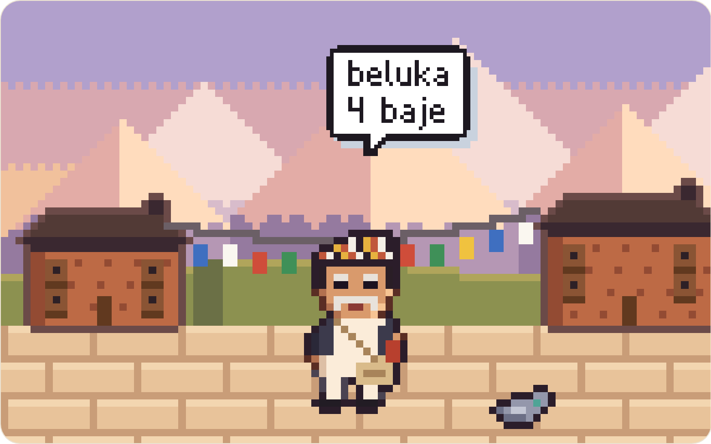
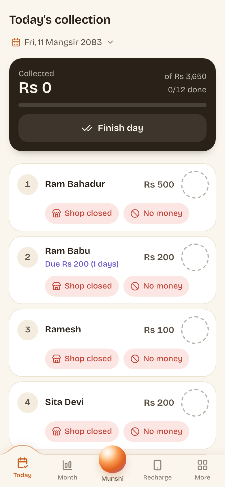
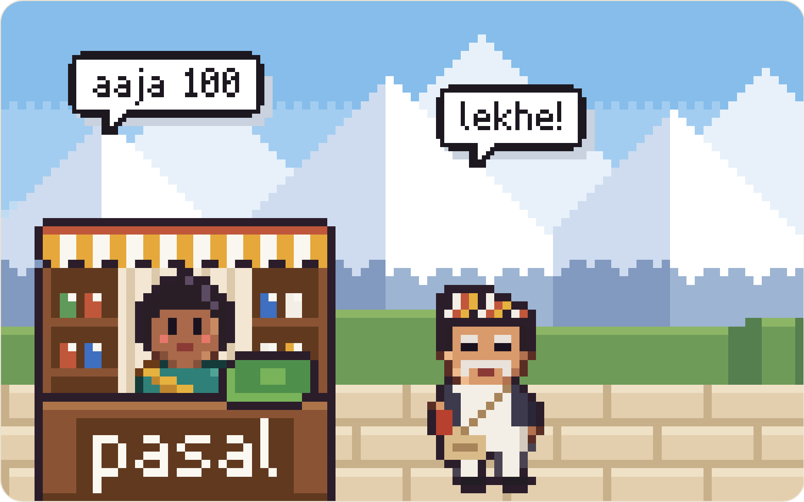

A voice ledger for daily deposit collectors: the people who walk shop to shop every evening collecting small savings, and write every rupee by hand.
Niraj Jha · Bengaluru, Karnataka · Solo build

Co-operative banks, credit societies and regional banks send agents to collect small daily savings from shops and homes, written in a passbook and a register.
More than a million business correspondents and microfinance officers collect repayments and deposits village by village.
Milk collection centres, kirana stores and recharge shops keep credit and daily totals in notebooks.
What they share: money changes hands standing up, the record is written by hand, and the person writing is busy, older or not comfortable typing.
Hindi, Nepali, Maithili or English, mixed the way people really talk.
"Ram Babu do sau, Gita Store paanch sau"One card per entry, matched to his customer list, amounts read as numbers.
Ram Babu Rs 200 · Gita Store Rs 500Out loud and on screen. Nothing is saved yet.
"2 entry, kul 700. Theek?"Saved to the phone first and synced when the network returns. Undo for 10 seconds.
"Haan"The same voice answers questions: "aaj kisne nahi diya?", "aaj kitna hona chahiye?", "Ram Babu ka kitna baaki?" and closes the day: "aaj ka hisaab band karo".
Several entries, one "haan". Names matched by sound across Devanagari and English letters. Amounts in Hindi, Nepali, Maithili or English words.
Two look-alike names: it asks. Paid twice today, or an odd amount: it warns. "Galti" undoes.
On-device recognition in Chrome when there is no signal. Anything it could not understand is kept and gone through once online.
Today's tick list, month register (prints on A4), loans with interest, recharge stock, and a photo of an old notebook page turned into customers.

Each one carries the savings of 50 to 300 families. In Nepal almost every co-operative and many bank branches run daily savings; in Karnataka the same work is called pigmy collection.
Bank mitras, MFI loan officers, milk collection centres and kirana owners keeping udhaar: the same "name + amount + yes" loop.
Figures are rounded public estimates, used for scale only.
| Service | What it does in Sajilo | Is it on the path that saves money? |
|---|---|---|
| Sarvam Saaras (speech to text) | Turns his spoken words into text, using his customers' names as hints. | No. It only gives text; our own code reads names and amounts, and nothing saves until he says "haan". |
| Sarvam Bulbul (text to speech) | Reads each card back to him in a natural voice. | No. Every reply is also shown on screen. |
| Claude Haiku (language model) | Answers only the sentences our rules cannot read, and the typed chat. | No. Entries, yes/no, totals and closing the day are plain code. |
| Chrome on-device speech | Hears him with no network (free, runs on the phone). | No. Same "haan" rule applies. |
| Postgres (Neon) + Cloudflare Workers | Backup, sync across devices, month register and reports. | Saves go to the phone first, then sync, so a slow or missing server never loses an entry. |
The next slide covers what happens if any of these get costly or stop working.
| Service | If it gets costly | If it stops working |
|---|---|---|
| Speech to text (Sarvam Saaras) | Only a few seconds of audio per entry are sent. Next step: an open Indic speech model (for example AI4Bharat IndicConformer) on our own server, or Chrome's free on-device recognition. | Talk switches to Chrome's on-device recognition, the same path it already uses offline. Anything not understood is kept as a note. The tap-to-tick list always works. |
| Voice replies (Sarvam Bulbul) | Replies are short ("2 entry, kul 700. Theek?"). Use the phone's built-in voice, which is free. | The phone's built-in voice reads the reply (already used offline). The text is always on screen. |
| Language model (Claude Haiku) | Most entries never reach it. Swap to a cheaper model: GPT mini and Sarvam-105b are already wired in. | Entries, questions and closing the day keep working. Only free-form chat shows "AI key missing". |
| Database and hosting (Neon, Cloudflare) | It is standard Postgres and Node, so it moves to any host. The Docker setup in the repo runs it on one machine. | The phone keeps saving to its own queue and syncs when the server is back. No entry is lost. |

His full book on Sajilo, every day. I fix what breaks on his street.
Collectors from his co-operative who deposit at the same branch. Free, installed on their own phones (it is a web app, no store needed).
One co-operative bank or credit society in Bengaluru with pigmy agents. Kannada added (Sarvam already supports it).
The clean month register is the hook for managers. Free for collectors; the co-operative pays a small monthly fee per agent for registers and reports.
Every collector reaches a branch, a manager and other collectors daily. One agent who stops carrying the notebook is the best advert.
| What we measure | Today, on paper | Target after four weeks |
|---|---|---|
| Entries made by voice | None: every entry is written by hand | 80% of his daily entries spoken, not written |
| Evening check (does the bag match the book?) | About 1 hour every night | Under 10 minutes |
| Days the cash does not match the book | We count them in week one as the baseline | 50% fewer such days than the baseline |
| Heard entries he has to fix before saying "haan" | New measure | Fewer than 1 in every 10 entries |
| Collectors who keep using it | New measure (5-10 collectors in the pilot) | 7 out of 10 still using it after four weeks, without reminders |
github.com/jha-niraj/sajilo
Run it: docker compose up --build then open localhost:3100. No keys needed; voice says "key not set" until a Sarvam key is added.
Phone 9503517330 · PIN 3110 · 12 customers with five days of history.
{{LIVE_URL}}